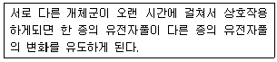
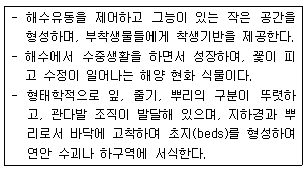
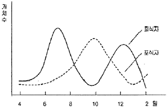
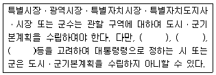
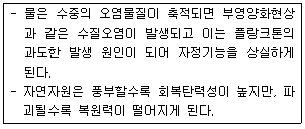
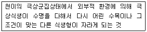
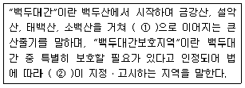
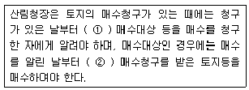
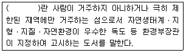
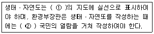

1과목: 환경생태학개론
1. 수온의 계절적 변동에 따라 구분한 호소의 수직적 층 중 여름이 되면 상층부는 수온이 높고 깊은 곳에서는 낮으며 중간에서 수온이 급격하게 저하되는 층을 무엇이라 하는가?
2. 암반, 자갈밭, 건조한 사구 등과 같은 곳에서 진행되는 천이는?
3. 생물다양성 유지를 위한 보호지구 설정을 위해 흔히 이용하는 도서생물지리 모형(island biogeographical model)의 내용과 거리가 먼 것은?
4. 다음은 무엇을 설명한 것인가?

5. 생물이 필요로 하는 원소가 생물권 내에서 환경 → 생물 또는 생물 → 환경으로 일정한 경로를 거쳐 순환되는 과정을 무엇이라고 하는가?
6. 다음 [보기]에서 설명하는 특징을 가지고 있는 해양식물 군락은?

7. 바다와 호수에 분포하는 수초의 경우 광은 광합성에 영향을 주고 있다. 이러한 수중의 광조건에 대한 설명으로 옳은 것은?
8. 유해물질의 해상운송은 국제해사기구(IMO)의 국제해상 위험물질코드(IMDG Code : International Maritime Dangrous Goods Code)에 따라 규제를 받는다. 이에 대한 연결이 바르게 된 것은?
9. 환경적으로 건전하고 지속가능한 발전(ESSD)이 범지구적으로 보편화된 계기는?
10. 해양에서 오염의 정도를 지시해주는 오염지표종에 대한 설명으로 옳지 않은 것은?
11. 열대우림지역의 경계에 존재하는 독특한 유형의 초원으로 다른 열대삼림과는 달리 건조기가 긴 육상생태계는?
12. 생태계 유형에 따른 현존식생도의 범례 중 “자연식생”에 해당되지 않는 것은?
13. 하천은 발원지 상류에서부터 하류인 하구에 이르기까지 생물상이 단계적으로 변하는데, 이 때 종의 수평구조가 나타난다. 또한 시간이 경과함에 따라 서식지나 생물상이 변하게 된다. 이와 같은 현상은?
14. 다음의 그래프는 군집의 상호작용 중 무엇을 설명할 수 있는 그래프인가?

15. 다음 부영양화의 피해에 관한 설명으로 가장 거리가 먼 것은?
16. 지구의 기후변화와 열섬효과 등 인류생존에 큰 영향을 주고 있는 오존층을 보호하려는 노력을 하고 있다. 다음 중 오존층은 대기의 어디에 위치하는가?
17. 온대지역의 삼림을 벌채한 후, 불을 놓아 참억새로 초원화가 성립된 초지에 소나 말과 같은 초식동물을 방목했을 경우 천이의 진행 방향은?
18. 하천생태계의 조사방법 중 틀린 것은?
19. 다음 중 호소의 산성화와 어류의 개체수 감소를 초래하는 것은?
20. 식물체의 생산성이 가장 적은 양으로 존재하는 영양물질의 양에 의하여 결정된다는 법칙은?
2과목: 환경계획학
21. 지속가능성의 단계를 「아주 약한 지속가능성」, 「약한 지속가능성」, 「강한 지속가능성」으로 구분할 수 있는데 정책, 경제, 사회분야의 설명이 모두 올바르게 연결된 것은?
22. 우리나라 습지보전법과 시행령에서 제시된 습지보전ㆍ이용 시설에 해당되지 않는 것은?
23. 지속가능성의 달성을 위해 국토 및 지역차원에서의 환경계획 수립시 고려될 수 있는 사항이 아닌 것은?
24. 환경정책기본법 안에서 국가환경종합계획의 수립시 포함해야 할 사항이 아닌 것은?
25. 다음 조시기본계획의 수립권자와 대상지역에 관한 설명 중 ( )안에 들어갈 내용이 아닌 것은?

26. 시민참여형 환경계획의 하나인 옴부즈만 제도로 기대할 수 있는 기능이 아닌 것은?
27. 다음 바젤협약(Basel Convention)과 관련된 내용 중 옳지 않은 것은?
28. 생태건축계획에서 수동적 에너지 손실 방지 및 보존을 고려하기 위한 내용으로 거리가 먼 것은?
29. 토지적성평가에 대한 설명 중 맞지 않는 것은?
30. 참여형 환경계획에 대한 설명으로 옳은 것은?
31. 환경과 인간활동의 지속성을 유지하기 위해서 공간이나 시간적으로 경계를 설정하고 비용 또는 노력을 먼 곳이나 장래로 미루지 않는 자세로 도시나 사회, 경제구조를 유지해가고자 하는 것은 무엇과 관련된 내용인가?
32. 다음 중 생태계의 생물다양성과 관련이 없는 것은?
33. 다음 중 사회기반형성 차원에서의 환경계획 내용과 거리가 먼 것은?
34. 다음 중 생태관광의 기본원칙으로 가장 거리가 먼 것은?
35. 다음의 내용이 설명하는 환경의 특성은?

36. 도시관리계획의 취락지구를 용도에 따라 세분한 것으로 개발제한구역안의 취락을 정비하기 위하여 필요한 지구는?
37. 환경부장관이 정하는 생태마을의 지정조건에 적합한 마을은?
38. 다음의 토지관련 주제도 중 전 국토를 대상지역으로 하지 아니하고 주로 도시화지역을 대상으로 구축하는 주제도는?
39. 국가환경종합계획과 관련된 설명으로 틀린 것은?(오류 신고가 접수된 문제입니다. 반드시 정답과 해설을 확인하시기 바랍니다.)
40. 어떤 일정한 생명집단 및 사회 속에서 3차원적이고 지역적으로 다른 것들과 구분되는 생명공간 단위에 해당하는 것은?
3과목: 생태복원공학
41. 식물종자에 의한 유전자 이동의 방법 중 동물에 의한 산포(散布)방법이 아닌 것은?
42. 습지를 복원하고자 할 때 고려사항으로 맞는 것은?
43. 도시생태계 내 도시림의 식생복원 방법으로 적합하지 않은 것은?
44. 하천 둑을 밑폭 5m, 위폭 2m, 높이 2m의 50m 연장 둑을 조성하였을 때 취토 토사량은?
45. 다음 중 질소 고정작용을 하는 식물에서 고정량이 가장 큰 것은?
46. 생태복원 지역의 안내시설물 설치기준으로 잘못된 것은?
47. 다음 중 폐광에서 생겨나는 훼손의 유형이 아닌 것은?
48. 야생화 초지의 복원기법에 대한 설명으로 적합하지 않은 것은?
49. 강우에 의한 훼손지의 침식현상 중 비탈면 상하방향의 물길, 또는 자연적인 비탈면 요부에 표면유거수가 집수되어 유하세력이 점차 증대됨에 따라 하나의 분명한 작은 물길이 형성되는 침식은 무엇인가?
50. 녹화식물의 근계에 대한 설명으로 틀린 것은?
51. 토양 비옥도 증진을 위한 시비 방안으로 옳지 않은 것은?
52. 토양개량에 쓰이는 자재 중 피트모스에 대한 설명으로 옳지 않은 것은?
53. 다음 중 습생초원의 서식중에 해당되지 않는 것은?
54. 압축공기로 콘크리트 또는 모르타르를 시공면에 뿜어붙이는 공법은?
55. 자연형 하천복원에 활용하는 야자섬유 재료의 규격 및 설치기준으로서 틀린 것은?
56. 해안의 유형의 대한 설명 중 잘못된 것은?
57. 도시생태계 복원대책으로 틀린 것은?
58. 채석장에서 돌을 뜰 때 앞면, 길이(뒷길이), 뒷면, 접촉면, 허리치기의 치수를 특별한 규격에 맞도록 지정하여 만든 쌓기용 석재는?
59. 지각을 구성하고 있는 8대 주요원소가 아닌 것은?
60. 인간에 의한 생태계 단편화의 영향에 대해 설명한 것으로 올바른 것은?
4과목: 경관생태학
61. 다음 중 비오톱의 보호 및 조성에 있어서의 원칙에 해당하지 않는 것은?
62. 경관의 이질성(heterogeneity)에 대한 정의가 맞는 것은?
63. 댐 건설로 인한 경관적 영향으로 옳지 않은 것은?
64. 환경보전지역(서식처)을 설정하는데 필요한 기준으로 가장 부적합한 것은?
65. 지리정보체계(GIS)의 기능적 요소가 아닌 것은?
66. 굴곡에 의한 생태적 효과 중 조각을 관통 할 때 좁고 우묵 들어간 곳으로 집중되는 효과를 무엇이라고 하는가?
67. 한반도 해안 경관의 설명으로 옳지 않은 것은?
68. 다음 중 경관생태학에서 주로 다루지 않은 것은?
69. 경관생태학은 경관의 구조, 기능 변화에 중점을 둔 연구영역이다. 다음 중 경관생태학적 관점에서 고려해야 할 요소로 맞는 것은?
70. 산림의 자연성을 파악하는 도면으로 자연생태 및 환경적 가치를 판단할 수 있는 지표로서 식생과 토지이용현황에 따라 산림공간의 상태를 등급화한 도면은 무엇인가?
71. 다음 설명에 해당되는 천이의 유형은?

72. 최소존속개체군(minimum viable population : MVP)의 정의로 맞지 않는 것은?
73. 비오톱의 보호를 위해서는 개념 설정이 필요한데 이 개념 설정 항목으로 적합하지 않은 것은?
74. 토지피복분류에 주로 사용하는 Landsat TM/ETM+ 영상에 대한 설명으로 알맞은 것은?
75. 경관생태학 연구의 특징이 아닌 것은?
76. 보전 공간설정을 위한 비오톱 평가 지표들을 가장 바르게 나열한 것은?
77. 경관을 이루는 기본적인 단위는 경관요소이며, 크게 3가지로 나눌 수 있다. 이에 포함되지 않는 것은?
78. 문화와 경관생태의 관계를 가장 바르게 설명한 것은?
79. 다음 토지변형을 가져오는 요인 중 서식지 내에 구멍이 생기는 현상은?
80. 서식처의 파편화에 의해 국지적으로 멸종 가능성이 높은 종에 속하지 않는 것은?
5과목: 자연환경관계법규
81. 자연환경보전법상 용어의 정의로 거리가 먼 것은?
82. 국토의 계획 및 이용에 관한 법률 시행령상 광역도시계획수립을 위해 그 밖에 대통령령이 정하는 기초조사 사항으로 가장 거리가 먼 것은?
83. 자연환경보전법규상 생태통로의 설치기준으로 옳지 않은 것은?
84. 자연환경보전법규상 위임업무 보고사항 중 “생태ㆍ경관보전지역 안에서의 행위중지ㆍ원상회복 또는 대체자연의 조성 등의 명령실적”의 보고 횟수 기준은?
85. 다음은 백두대간 보호에 관한 법률상 용어의 뜻이다. ( )안에 가장 적합한 것은?

86. 산지관리법에 따르면 다른 법률에 따라 산지를 특정용도로 이용하기 위하여 지역ㆍ지구 및 구역 등으로 지정 또는 결정하고자 하는 때에는 산림청장 등과 미리 협의하여야 한다. 이를 “보전목적”과 “개발목적”으로 이용하기 위한 지역 등으로 구분할 때 다음 중 “개발목적”으로 이용하기 위한 협의 대상지역 등에 해당하는 것은?
87. 개발제한구역의 지정 및 관리에 관한 특별조치법규상 개발제한구역의 경계선을 표시하기 위한 경계표석의 규격 및 설치기준으로 틀린 것은?
88. 다음은 백두대간 보호에 관한 법률 시행령상 토지등의 매수청구 절차에 관한 사항이다. ()안에 가장 적합한 것은?

89. 생물다양성 보전 및 이용에 관한 법률상 국외반출승인을 받아야 하는 대상 생물자원이지만 승인을 받지 아니하고 반출승인대상 생물자원을 국외로 반출한 자에 대한 벌칙기준은?
90. 국토의 계획 및 이용에 관한 법률상 각 용도지구에 관한 설명으로 옳지 않은 것은?
91. 습지보전법상 습지보호지역으로 지정ㆍ고시된 습지를 공유수면 관리 및 매립에 관한 법률에 따른 면허없이 매립한 자에 대한 벌칙기준으로 옳은 것은?
92. 독도 등 도서지역의 생태계 보전에 관한 특별법상 용어의 뜻이다. ( )안에 알맞은 용어는?

93. 농지법령상 신고 또는 고발사항에 대한 포상금 지급기준(건당)으로 옳지 않은 것은?
94. 산지관리법상 산지전용ㆍ일시사용제한지역으로 지정할 수 있는 산지로 가장 거리가 먼 것은?
95. 다음은 자연환경보전법상 생태ㆍ자연도에 관한 설명이다. ( )안에 알맞은 것은?

96. 야생생물 보호 및 관리에 관한 법률 시행령상 생물자원의 분류ㆍ보전 등에 관한 관련 전문가와 가장 거리가 먼 것은?
97. 환경정책기본법령상 오존(O3)의 대기환경기준(ppm)으로 옳은 것은? (단, 8시간 평균치)
98. 농지법상 상속으로 농지를 취득한 자로서 농업경영을 하지 아니하는 자는 그 상속 농지 중에서 얼마까지만 소유할 수 있는가?
99. 환경정책기본법령상 해역의 생태기반 해수수질 기준에서 Ⅱ등급(좋음)의 수질평가 지수값(Water Quality Index)은?
100. 환경정책기본법상 환경기준의 설정에 관한 사항으로 옳지 않은 것은?